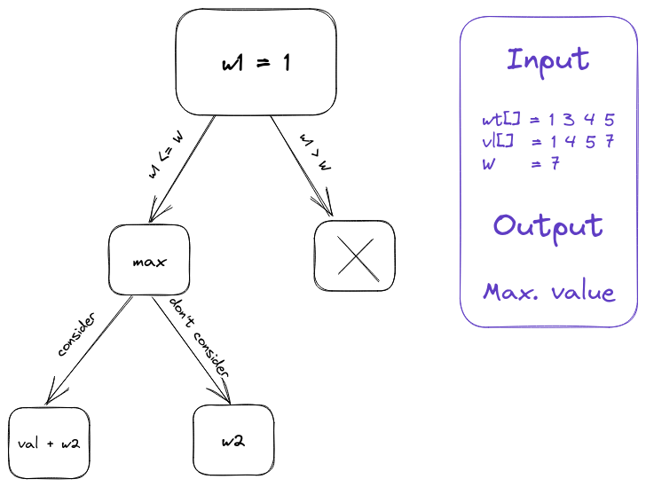

Dynamic Programming
Table of Contents
1. DP
- DP -> Enhanced Recursion
- First do Recursion -> memoization (dp) -> top-down (dp)
2. How to identify a dp problem?
- Choice: A problem contains some choices that I have to make.
- Optimum: A problem asks for optimum solution (max. pairs, min. numbers, etc).
3. 0/1 knapsack problems
Given a set of items, each with a weight and a value, determine which items to include in the collection so that the total weight is less than or equal to a given limit and the total value is as large as possible – Wikipedia
- Fractional knapsack (greedy): We can put fractions of an item in the bag if the capacity left is less than the weight of the item.
- 0/1 knapsack (dp): The whole item will be put (1) or none (0).
- Unbounded knapsack: Copies of one item can be put multiple number of times to reach an optimal solution.
DP: Recursive Solution -> memoization (dp) -> top-down (dp)
Input: weight[] = 1 3 4 5 value[] = 1 4 5 7 W = 7 Output: Max. value
practice link: gfg
Recursive approach:

#include <iostream> #include <vector> using std::vector; auto knapsack(vector<int> &wt, vector<int> &val, int w, int n) { if (w == 0 || n == 0) return 0; if (wt[n - 1] <= w) { return std::max(val[n - 1] + knapsack(wt, val, w - wt[n - 1], n - 1), knapsack(wt, val, w, n - 1)); } else { return knapsack(wt, val, w, n - 1); } } int main() { vector<int> wt = {1, 3, 4, 5}; vector<int> val = {1, 4, 5, 7}; int W = 7; auto res = knapsack(wt, val, W, val.size()); std::cout << res; }
9
Memoized Solution:
#include <iostream> #include <vector> #include <cstring> using std::vector; int cache[101][1001]; auto knapsack(vector<int> &wt, vector<int> &val, int w, int n) { if (w == 0 || n == 0) return 0; if (cache[n][w] != -1) return cache[n][w]; if (wt[n - 1] <= w) { cache[n][w] = std::max(val[n- 1] + knapsack(wt, val, w - wt[n - 1], n - 1), knapsack(wt, val, w, n - 1)); } else { cache[n][w] = knapsack(wt, val, w, n - 1); } return cache[n][w]; } int main() { vector<int> wt = {1, 3, 4, 5}; vector<int> val = {1, 4, 5, 7}; int W = 7; memset(cache, -1, sizeof(cache)); auto res = knapsack(wt, val, W, val.size()); std::cout << res; }
9